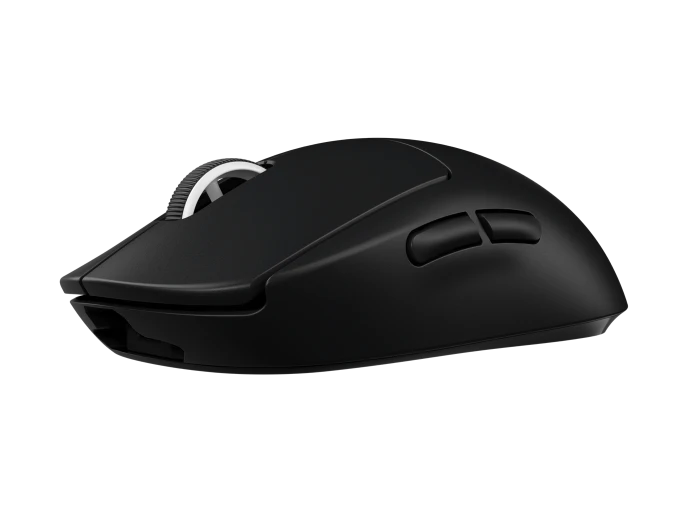

PRO X
SUPERLIGHT
Несмотря на простой дизайн мышь беспроводная Logitech PRO X SUPERLIGHT черная [910-005880] порадует сверхчувствительностью и удобством. В разработке устройства принимали участие профессиональные киберспортсмены, доводившие дизайн и функционал до совершенства в течение двух лет. Лаконичный черный корпус с тефлоновым покрытием и облегченной АКБ весит всего 63 г, удобно лежит в правой руке. Устройство Logitech PRO X SUPERLIGHT подключается по беспроводной LIGHTSPEED-технологии, радуя моментальным откликом без малейших задержек. Датчик HERO позволяет мыши реагировать с чувствительностью 25600 dpi. При этом потребление энергии снижено в 10 раз по сравнению с подобными игровыми моделями.
€139,00